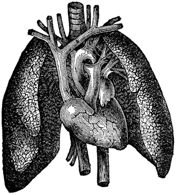

TABAC
“Article 1 : le tabac est un poison.
Article 2 : tant pis.” Sacha Guitry
Article 2 : tant pis.” Sacha Guitry
Arrêter de fumer, enfin !
"Aujourd'hui, je ne sais pas combien de temps vous allez attendre pour découvrir le plaisir de ne plus fumer ?" Vous avez sûrement autour de vous déja entendu des témoignages qui confirment la possibilité d’arrêter de fumer de manière rapide, totale et définitive grâce à l’hypnose.
Beaucoup de fumeurs aimeraient arrêter, mais pensent ne pas pouvoir y arriver. C'est généralement à la suite de plusieurs expériences de "stoppage tabagique classique" que la majorité perd confiance et se demande comment redevenir non-fumeur. Car il n'y a pas de petite addiction, la dépendance au tabac est du même niveau que la dépendance à l'héroïne. Pire, lorsque la consommation d'alcool ne génère que 10 % à 15 % de cas d'alcoolisme, il y a 60 % à 70 % de risques de devenir dépendant dès l'entréée dans le tabagisme.
Quand le tabagique longtemps immobilisé dans cette dépendance, prend enfin sa décision. Il perçoit la cigarette comme inutile, étrangère ou comme un bourreau dont il est la victime. Voici l'exemple d'un levier de motivation que peut utiliser l'hypnose.
Pourquoi avec l’hypnose ça fonctionne ?
Cette approche technique tient compte de différents plans comme les comportements, les émotions, les valeurs et les croyances ou encore l’environnement et ses déclencheurs. L’arrêt du tabac par hypnose repose sur le mécanisme de la suggestion et le concept de l’empreinte. Il existe en chaque fumeur une part qui désire et a toujours désiré se délivrer un jour du tabac. Le thérapeute amplifie cette part, si infime soit-elle. Il donne l’avantage à des pensées et à un discours différents qui redonnent à la personne une sensation de liberté. Diverses suggestions sont délivrées pendant la séance d’hypnose pour arrêter de fumer, le sujet se saisissant de celles qui sont, pour lui, les plus mobilisatrices.
Ainsi, ces séances vont permettre de s’engager dans sa décision, de renforcer sa motivation, de se débarrasser de son image d’ancien fumeur et accueillir son nouveau "moi", de rompre avec le conditionnement psychologique, de remplacer ses réflexes, gestes, pensées, habitudes par de nouveaux plus sains, de se préparer à faire face aux futures situations qui pouvaient déclencher des envies et d’éliminer toutes les peurs et tous les effets secondaires nuisibles. En ce sens, l'hypnose est une technique éprouvée et confortable pour l'arrêt.
Pourquoi arrêter parait difficile ?
Quant il y a dépendance, elle se définit comme un besoin impérieux de continuer à absorber certaines drogues ou de maintenir un comportement afin de chasser un état de malaise corporel ou psychique dû au sevrage. Sachez que le tabagisme ne s'arrête pas à un comportement et peut être la réponse à un état anxieux, une difficulté à gérer son stress ou ses émotions.
Parce que la dépendance, autre que physiologique est psychologique ! Le fumeur se conditionne à répéter ce geste de nombreuses fois au cours de la journée. Il crée de nombreux réflexes (par exemple: café = cigarette). Il associe des schémas de pensée à la cigarette et il crée un lien émotionnel fort avec cette dernière. Pour ces raisons, le fumeur doit se débarrasser de ces déclencheurs qui le maintiennent à la cigarette.
Tolérance et dépendance à la nicotine :
La nicotine élève la stimulation des récepteurs cholinergiques nicotiniques cérébraux. L’activation excessive et souvent chronique de ces récepteurs est compensée par une régulation à la baisse du nombre de récepteurs fonctionnels. Cette réponse adaptative physiologique vise à conserver l’équilibre (homéostasie) en maintenant la neurotransmission et la fonction cérébrale normales malgré une activation anormale des récepteurs. La réduction du nombre de récepteurs fonctionnels diminue l’effet psychotrope de la nicotine. C’est le phénomène de tolérance qui incite le fumeur à augmenter le nombre de cigarettes fumées afin d’obtenir un effet constant.
"Aujourd'hui, je ne sais pas combien de temps vous allez attendre pour découvrir le plaisir de ne plus fumer ?" Vous avez sûrement autour de vous déja entendu des témoignages qui confirment la possibilité d’arrêter de fumer de manière rapide, totale et définitive grâce à l’hypnose.
Beaucoup de fumeurs aimeraient arrêter, mais pensent ne pas pouvoir y arriver. C'est généralement à la suite de plusieurs expériences de "stoppage tabagique classique" que la majorité perd confiance et se demande comment redevenir non-fumeur. Car il n'y a pas de petite addiction, la dépendance au tabac est du même niveau que la dépendance à l'héroïne. Pire, lorsque la consommation d'alcool ne génère que 10 % à 15 % de cas d'alcoolisme, il y a 60 % à 70 % de risques de devenir dépendant dès l'entréée dans le tabagisme.
Quand le tabagique longtemps immobilisé dans cette dépendance, prend enfin sa décision. Il perçoit la cigarette comme inutile, étrangère ou comme un bourreau dont il est la victime. Voici l'exemple d'un levier de motivation que peut utiliser l'hypnose.
Pourquoi avec l’hypnose ça fonctionne ?
Cette approche technique tient compte de différents plans comme les comportements, les émotions, les valeurs et les croyances ou encore l’environnement et ses déclencheurs. L’arrêt du tabac par hypnose repose sur le mécanisme de la suggestion et le concept de l’empreinte. Il existe en chaque fumeur une part qui désire et a toujours désiré se délivrer un jour du tabac. Le thérapeute amplifie cette part, si infime soit-elle. Il donne l’avantage à des pensées et à un discours différents qui redonnent à la personne une sensation de liberté. Diverses suggestions sont délivrées pendant la séance d’hypnose pour arrêter de fumer, le sujet se saisissant de celles qui sont, pour lui, les plus mobilisatrices.
Ainsi, ces séances vont permettre de s’engager dans sa décision, de renforcer sa motivation, de se débarrasser de son image d’ancien fumeur et accueillir son nouveau "moi", de rompre avec le conditionnement psychologique, de remplacer ses réflexes, gestes, pensées, habitudes par de nouveaux plus sains, de se préparer à faire face aux futures situations qui pouvaient déclencher des envies et d’éliminer toutes les peurs et tous les effets secondaires nuisibles. En ce sens, l'hypnose est une technique éprouvée et confortable pour l'arrêt.
Pourquoi arrêter parait difficile ?
Quant il y a dépendance, elle se définit comme un besoin impérieux de continuer à absorber certaines drogues ou de maintenir un comportement afin de chasser un état de malaise corporel ou psychique dû au sevrage. Sachez que le tabagisme ne s'arrête pas à un comportement et peut être la réponse à un état anxieux, une difficulté à gérer son stress ou ses émotions.
Parce que la dépendance, autre que physiologique est psychologique ! Le fumeur se conditionne à répéter ce geste de nombreuses fois au cours de la journée. Il crée de nombreux réflexes (par exemple: café = cigarette). Il associe des schémas de pensée à la cigarette et il crée un lien émotionnel fort avec cette dernière. Pour ces raisons, le fumeur doit se débarrasser de ces déclencheurs qui le maintiennent à la cigarette.
Tolérance et dépendance à la nicotine :
La nicotine élève la stimulation des récepteurs cholinergiques nicotiniques cérébraux. L’activation excessive et souvent chronique de ces récepteurs est compensée par une régulation à la baisse du nombre de récepteurs fonctionnels. Cette réponse adaptative physiologique vise à conserver l’équilibre (homéostasie) en maintenant la neurotransmission et la fonction cérébrale normales malgré une activation anormale des récepteurs. La réduction du nombre de récepteurs fonctionnels diminue l’effet psychotrope de la nicotine. C’est le phénomène de tolérance qui incite le fumeur à augmenter le nombre de cigarettes fumées afin d’obtenir un effet constant.

Par son action stimulante sur les récepteurs nicotiniques du système dopaminergique la nicotine renforce la libération de dopamine dans le noyau accumbens. La dopamine est normalement libérée lors de comportements essentiels à la survie de l’individu ou de l’espèce et produit de très fortes stimulations encéphaliques afin de faire éprouver du plaisir (c’est le circuit de récompense/renforcement.) Cependant, une exposition prolongée de ces récepteurs à la nicotine réduit l’efficacité de cette dernière ; en effet, le fumeur maintient tout au long de la journée une concentration faible de nicotine dans son cerveau, cette faible concentration est suffisante pour maintenir une grande partie des récepteurs nicotiniques dans un état d’inactivation et pour ralentir leur renouvellement. L’autre facette du phénomène d’inactivation est donc la baisse du plaisir ressenti.
Après une brève période d’abstinence (une nuit de sommeil par exemple), la concentration cérébrale en nicotine diminue et permet à une partie des récepteurs de retrouver leur sensibilité. Le retour de ces récepteurs à un état fonctionnel hausse la neurotransmission cholinergique à un niveau anormal. Le fumeur éprouve donc de l’agitation et de l’inconfort, ce qui l’incite à fumer. Cette première cigarette de la journée procure un plaisir maximum car la sensibilité des récepteurs nicotiniques du système dopaminergique est maximale. Puis les récepteurs se désensibilisent rapidement, la tolérance se développe et le plaisir diminue : c’est le cercle vicieux du tabagisme.
Le syndrôme de sevrage :
Le syndrôme de sevrage est le résultat de l'arrêt brutal ou de la diminution importante des apports de nicotine chez un fumeur en état de dépendance physique. Les troubles pouvant être ressentis sont les suivants : humeur triste, insomnie, irritabilité, frustration, colère, anxiété, agitation, difficultés de concentration intellectuelle, pensée obsédante de la cigarette, augmentation de l'appétit …
Ces symptômes peuvent retentir sur le comportement du fumeur en manque et leur présence est une cause fréquente de reprise du tabac dans les jours ou semaines suivant l'arrêt. Ils peuvent constituer une source de conflits dans la vie quotidienne, familiale ou professionnelle.
L’arrêt sous hypnose réduit, voire annule la perception des états de manque.
Néanmoins, l’arrêt immédiat s’est révélé toujours préférable à l’arrêt progressif. Toutefois, certaines personnes ont besoin d’étapes pour affermir leur décision et s’habituer au changement. Il est donc souhaitable d'assurer un suivi pour améliorer les résultats.
Ma position d'accompagnant :
Mon expérience autour de l'arrêt tabagique m'amène aujourd'hui à considérer tout autant la non reprise que l'arrêt. Afin d'optimiser votre changement, je me porte à votre écoute pour vous accompagner dans cette continuité.
Après une brève période d’abstinence (une nuit de sommeil par exemple), la concentration cérébrale en nicotine diminue et permet à une partie des récepteurs de retrouver leur sensibilité. Le retour de ces récepteurs à un état fonctionnel hausse la neurotransmission cholinergique à un niveau anormal. Le fumeur éprouve donc de l’agitation et de l’inconfort, ce qui l’incite à fumer. Cette première cigarette de la journée procure un plaisir maximum car la sensibilité des récepteurs nicotiniques du système dopaminergique est maximale. Puis les récepteurs se désensibilisent rapidement, la tolérance se développe et le plaisir diminue : c’est le cercle vicieux du tabagisme.
Le syndrôme de sevrage :
Le syndrôme de sevrage est le résultat de l'arrêt brutal ou de la diminution importante des apports de nicotine chez un fumeur en état de dépendance physique. Les troubles pouvant être ressentis sont les suivants : humeur triste, insomnie, irritabilité, frustration, colère, anxiété, agitation, difficultés de concentration intellectuelle, pensée obsédante de la cigarette, augmentation de l'appétit …
Ces symptômes peuvent retentir sur le comportement du fumeur en manque et leur présence est une cause fréquente de reprise du tabac dans les jours ou semaines suivant l'arrêt. Ils peuvent constituer une source de conflits dans la vie quotidienne, familiale ou professionnelle.
L’arrêt sous hypnose réduit, voire annule la perception des états de manque.
Néanmoins, l’arrêt immédiat s’est révélé toujours préférable à l’arrêt progressif. Toutefois, certaines personnes ont besoin d’étapes pour affermir leur décision et s’habituer au changement. Il est donc souhaitable d'assurer un suivi pour améliorer les résultats.
Ma position d'accompagnant :
Mon expérience autour de l'arrêt tabagique m'amène aujourd'hui à considérer tout autant la non reprise que l'arrêt. Afin d'optimiser votre changement, je me porte à votre écoute pour vous accompagner dans cette continuité.

TEST DE FRAGERSTRÖM
QUELQUES CHIFFRES SUR LE TABAC

EN RELATION

EMOTION

TOXIC Ô MANIE
ANXIETE
FRUSTRATION
COMPORTEMENT